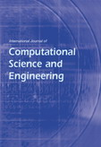
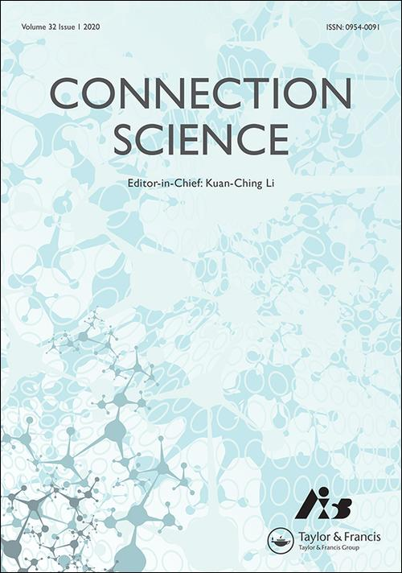
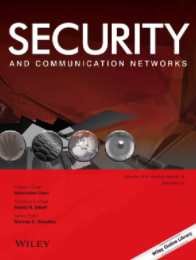

About EISA 2020
With recent evolution of adversarial techniques, intrusions have become more complex that may threaten the security of various assets regarding information and applications. In addition, coordinated intrusions like worm outbreak can continue to be a major threat to information, system and network security in the near future. The popularity of Internet may generate a large volume of different types of sensitive information. Therefore, there is a need for emerging techniques, theories and applications to protect information and practical security.
The First International Symposium on Emerging Information Security and Applications (EISA) aims to provide a platform for researchers and practitioners across the world to exchange their ideas. It seeks original submissions that discuss practical or theoretical solutions to enhance the information and application security in practice.
Online presentation will be accepted this year, and all qualified papers will be invited to submit an extended version to several special issues.
-------------------------------------
Topics of interest include, but are not limited to the ones listed below.
- Cyber intelligence techniques
- Multimedia security
- Malware and unwanted software
- Vulnerability analysis and reverse engineering
- Usable security and privacy
- Intrusion detection and prevention
- Authentication and access control
- Anonymity and privacy
- Cryptographic protection
- Digital forensics
- Cyber physical systems security
- Adversarial learning
- Security measurement
- Security management and policies
- Hardware and physical security
-------------------------------------
Important Dates:
1st Submission Deadline: 23 August, 2020 (23:59 AoE, Firm Dealine!)
1st Acceptance Notification: 23 Semptember, 2020
Camera Ready: 15 October, 2020
2nd Submission Deadline: 15 September, 2020 (23:59 AoE, Firm Dealine!)
2nd Acceptance Notification: 15 Ocotber, 2020
Camera Ready: 30 October, 2020
-------------------------------------
For questions, please contact us at:
eisa2020@easychair.org.
Organized by:
Technical University of Denmark, Denmark
Central China Normal University, China
News & Updates
August 8, 2020 Requested by SpaCSS, and the submission deadline has been extended (Firm!).
June 23, 2020 SpaCSS has changed its dates to December, and the submission deadline has been extended.
May 19, 2020 We are happy to announce that Sensors journal will be our media partner.
April 05, 2020 The submission link is available.
April 02, 2020 EISA website is online, and will be associate with SpaCCS 2020.
Keynote Speakers
Note: The order of speakers is sorted according to the alphabetical order of surname.
Assistant Professor Sherman S. M. Chow
Affiliation: The Chinese University of Hong Kong
Title: Password-Hardening Services
Abstract
Password remains the most widespread means of authentication, especially on the Internet. As such, it is the Achilles heel of many modern systems. We witnessed the trend of recurring breaches where (salted) password databases get stolen. This is disastrous as low-entropy passwords can be guessed by brute-force attacks easily. Facebook pioneered using a cryptographic server to harden password-based authentication. We call it password-hardening (PH) service. The crypto server serves as a helper in the validation process and as a rate-limiter to thwart online dictionary attack. We first show that the PH scheme of Schneider et al. (ACM CCS '16) is vulnerable to offline attacks just after a single validation query. We then suggest stronger security definitions, and an even more efficient construction, Phoenix, to achieve them. It can handle up to three times more than Pythia (USENIX Security '15), the first and the only solution remains secure before our work. PH only provides user-authentication but cannot provide confidentiality of sensitive user data (e.g., credit card number for an e-commerce site). Although encryption somewhat alleviates the problem, decryption is often needed for utility, and keeping the decryption key within reach is obviously dangerous. To address this seemingly unavoidable problem, we propose the notion of password-hardened encryption (PHE). PHE inherits the security features of PH, in particular, the crypto rate-limiter learns neither the password nor the sensitive data, while validating the password and helping in decryption. More importantly, both the crypto rate-limiter and the crypto-service client can rotate their secret keys, providing a proactive security mechanism mandated by the Payment Card Industry Data Security Standard. We build an extremely simple PHE which can handle more than 525 encryption and (successful) decryption requests per second per core on a 10-core Intel Xeon E5-2640 CPU. This talk is based on two papers appeared in USENIX Security 2017 and 2018.
Professor Robert Deng
Affiliation: Singapore Management University
Title: A User Centric and Layered Approach to Mobile Security
Abstract
Mobile computing has become a fundamental feature in the lives of billions of people, who have developed an unprecedented reliance on smart phones and tablets compared to any previous computing technology. With the trend of bring your own device, mobile devices are increasingly used to access and store sensitive corporate information as well. However, not only mobile devices and applications present a unique set of risks to personal privacy, they also pose new security challenges to enterprise information systems. This talk will provide an overview of the research activities conducted in the Secure Mobile Center at the Singapore Management University, from techniques to fortifying mobile platforms with a user centric trust anchor, mobile malware analysis, detection and containment, secure and usable schemes for local and remote authentication, to scalable and efficient access control of encrypted data in the cloud for mobile users whose devices are constrained in both power and computation capabilities.
Professor Shin’ichiro Matsuo
Affiliation: Georgetown University
Title: Era of Elusiveness in Security and Privacy
Abstract
When we think about security and privacy, we try and tend to establish a consistent model to design and evaluate technologies. Such a model helps understandings of problems, development of theory and technologies over the same common ground. Thus, we believe that creating a concrete model and goal for a kind of technologies are required to achieve enough security and privacy. Recent progress of application protocol raises a question to such a style of security research. Bitcoin, a protocol proposed in an anonymous paper without a consistent model and peer review, realizes unexpected economic impacts than other cryptographic protocols. The protocol is a beautiful combination of many different kinds of theoretical backgrounds; hence, the reverse-engineering to produce a consistent model is hard, and there are no successful attempts to obtain it. Beyond Bitcoin, blockchain is expected to be used for broad applications than payment in Bitcoin. For those wide ranges of applications, we need to deal with additional many uncertain factors to evaluate security and privacy of blockchain based systems, over the bitcoin which still lacks a consistent model. System model, trust model and decentralization, security assumptions, and performance requirements are in a trade-off relationship. Designers of each blockchain based system deal with elusive and non-static security and privacy model. In this keynote, I will show how bitcoin and blockchain give a new perspective to analyze the nature of these protocols, and what is needed for security researchers to deal with practical but elusive technologies.
Professor Kui Ren
Affiliation: Zhejiang University
Title: Attributing Pictures to Smartphones via Camera Fingerprinting
Abstract
Today society faces numerous data leakage incidents, which affect users‚Ä?privacy more severe than ever. Existing user authentication practices based on traditional cryptography and biometric techniques have become largely insufficient, if not ineffective, as we move into the AI and IoT era. In order to address this challenge, smartphones have been widely explored by both academia and industry as a readily available possession device of the users. In this talk, we explore the technique of camera fingerprinting to develop a brand-new hardware-rooted smartphone authentication mechanism. Various security issues underlying the proposed authentication mechanism are discussed in-depth. The usability of the proposed solution is also demonstrated through real-world experiments.
Professor Mark Ryan
Affiliation: University of Birmingham
Title: Security of machine learning
Abstract
Machine learning has achieved impressive results in a wide variety of computing problems, including computer vision, speech recognition, content filtering, anomaly detection, and competitive game playing. However, the models in machine learning are often insecure, both from a confidentiality and an integrity point of view. In a confidentiality compromise, say involving a machine learning model mapping symptoms to disease diagnosis, an attacker could extract from the model data about specific individuals used in its training. Integrity compromises include the possibility that an attacker subtly alters query data, for example by modifying the pixel values of an image in ways that can't be detected by a human viewer, in order to achieve a particular result. The talk will introduce machine learning, and review existing attacks and defences concerning its security. Plenty of examples and intuitions will be given.
Call For Papers CFP Download
The International Symposium on Emerging Information Security and Applications (EISA) aims to provide a platform for researchers and practitioners across the world to exchange their ideas. It seeks original submissions that discuss practical or theoretical solutions to enhance the information and application security in practice.
-------------------------------------
Topics of interest include, but are not limited to the ones listed below.
- Cyber intelligence techniques
- Multimedia security
- Malware and unwanted software
- Vulnerability analysis and reverse engineering
- Usable security and privacy
- Intrusion detection and prevention
- Authentication and access control
- Anonymity and privacy
- Cryptographic protection
- Digital forensics
- Cyber physical systems security
- Adversarial learning
- Security measurement
- Security management and policies
- Hardware and physical security
Important Dates
| Submission Deadline |
1st: 23 August, 2020 (23:59 AoE, Firm Dealine!) 2nd: 15 September, 2020 (23:59 AoE, Firm Dealine!) |
| Acceptance Notification |
1st: 23 September, 2020 2nd: 15 Ocotber, 2020 |
| Camera-ready Copy Due |
1st: 15 October, 2020 2nd: 30 October, 2020 |
| Conference | 18 - 20 December, 2020 |
Author Instructions
Authors are invited to submit original papers. All papers need to be submitted electronically through the website (https://easychair.org/conferences/?conf=eisa2020) with PDF format. Submitted papers must not substantially overlap with papers that have been published or that are simultaneously submitted to a journal or a conference with proceedings. Papers must be clearly presented in English, must not exceed 12 pages (or up to 16 pages with the pages over length charge) in Springer LNCS format (https://www.springer.com/gp/computer-science/lncs/conference-proceedings-guidelines), including tables, figures, references and appendices. Papers will be selected based on their originality, significance, relevance, and clarity of presentation assessed by at least three reviewers. Submission of a paper should be regarded as a commitment that, should the paper be accepted, at least one of the authors will register and attend the conference to present the work.
We are pleased to announce that the proceeding will be published by Springer as a volume of the Lecture Notes in Computer Science (LNCS) series, associated with SpaCCS 2020. Auther instructions and LaTeX/Word templates for LNCS publications can be found via the following link.
Springer LNCS Author Information
Journal Special Issues
Selected papers from EISA 2020 will be invited to consider submission (after significant extension) for special issues in the following journals (more to come):
| Wireless Communications and Mobile Computing Special Issue on Attacks, Challenges, and New Designs in Security and Privacy for Smart Mobile Devices Learn more |
|
 | Journal of Information Security and Application Special Issue on Trends in Cybersecurity Learn more |
|  | International Journal of Computational Science and Engineering Special Issue on Cybersecurity Learn more |
|  | Connection Science Special Issue on Security, Trust and Privacy in Computer Networks Learn more |
| Sensors Security, Trust and Privacy in New Computing Environments Learn more |
|
|  | Security and Communication Networks
Special Issue on Machine Learning for Wireless Multimedia Data Security Learn more |
| Symmetry Special issue on Symmetry and Asymmetry in IoT and CPS Security and Privacy Learn more |
Organising Committee
Steering Committee
Jiageng Chen, Central China Normal University, China
Liqun Chen, University of Surrey, UK
Steven Furnell, University of Plymouth, UK
Anthony TS Ho, University of Surrey, UK
Sokratis K. Katsikas, Norwegian University of Science and Technology, Norway
Javier Lopez, University of Malaga, Spain
Weizhi Meng, Technical University of Denmark, Denmark
General Chairs
Liqun Chen, University of Surrey, UK
Kazumasa Omote, University of Tsukuba, Japan
Program Chairs
Weizhi Meng, Technical University of Denmark, Denmark
Jiageng Chen, Central China Normal University, China
Kuan-Ching Li, Providence University, Taiwan
Publicity Chairs
Zhe Xia, Wuhan University of Technology, China
Chunhua Su, University of Aizu, Japan
Publication Chair
Wenjuan Li, Hong Kong Polytechnic University, China
Program Committee
Gergely Biczok, Budapest University of Technology and Economics, Hungary
Rongmao Chen, National University of Defense Technology, China
Chen-Mou Cheng, Kanazawa University, Japan
Changyu Dong, Newcastle University, UK
Yunhe Feng, University of Tennessee, USA
Stefanos Gritzalis, University of the Aegean, Greece
Debiao He, Wuhan University, China
Yousef Al Hammadi, UAE University, United Arab Emirates
Shoichi Hirose, University of Fukui, Japan
Julian Jang-Jaccard, Massey University, New Zealand
Costas Lambrinoudakis, University of Piraeus, Greece
Wenjuan Li, Hong Kong Polytechnic University, China
Giovanni Livraga, University of Milan, Italy
Mohammad Mamun, JAIST, Japan
David Naccache, ENS, France
Javier Parra Arnau, Karlsruhe Institute of Technology, Germany
Josef Pieprzyk, CSIRO/Data61, Australia
Jun Shao, Zhejiang Gongshang University, China
Je Sen Teh, Universiti Sains Malaysia, Malaysia
Qianhong Wu, Beihang University, China
Zhe Xia, Wuhan University of Technology, China
Jingfang Xu, Central China Normal University, China
Wun-She Yap, Universiti Tunku Abdul Rahman, Malaysia
Accepted Papers
Full paper:
A New Insight - Proxy Re-Encryption under LWE with Strong Anti-Collusion
Wei Yin, Qiaoyan Wen, Wenmin Li, Hua Zhang and Zhengping Jin
Non-adaptive Group-Testing Aggregate MAC Scheme
Shoichi Hirose and Junji Shikata
A Generic Construction of Integrated Secure-Channel Free PEKS and PKE
Tatsuya Suzuki, Keita Emura and Toshihiro Ohigashi
Efficient and Secure Firmware Update/Rollback Method for Vehicular Devices(Invited Paper)
Yuichi Komano, Zhengfan Xia, Takeshi Kawabata and Hideo Shimizu
Efficient Evaluation of Low Degree Multivariate Polynomials in Ring-LWE Homomorphic Encryption Schemes
Sergiu Carpov and Oana Stan
Macros Finder: Do You Remember LOVELETTER?
Hiroya Miura, Mamoru Mimura and Hidema Tanaka
An Almost Non-Interactive Order Preserving Encryption Scheme
Jingjing Guo, Jianfeng Wang, Zhiwei Zhang and Xiaofeng Chen
Leakage-Resilient Chosen-Ciphertext Secure Functional Encryption from Garbled Circuits
Huige Wang, Kefei Chen, Joseph K. Liu and Ziyuan Hu
Towards Securing Challenge-based Collaborative Intrusion Detection Networks via Message Verification
Wenjuan Li, Weizhi Meng, Yu Wang, Jinguang Han and Jin Li
TMGMap: Designing Touch Movement-based Geographical Password Authentication on Smartphones
Weizhi Meng and Zhe Liu
Constrained (Verifiable) Pseudorakkndom Function from Functional Encryption
Pratish Datta
Time Series Analysis: Unsupervised Anomaly Detection Beyond Outlier Detection
Max Landauer, Markus Wurzenberger, Florian Skopik, Giuseppe Settanni and Peter Filzmoser
HanT_SM: Elliptic Curve Scalar Multiplication Algorithm Secure against Single-Trace Attacks
Bo-Yeon Sim, Kyu Young Choi, Dukjae Moon, Hyo Jin Yoon, Jihoon Cho and Dong-Guk
Keyword-Based Delegable Proofs of Storage
Binanda Sengupta and Sushmita Ruj
Certificateless Public Key Signature Schemes from Standard Algorithms
Zhaohui Cheng and Liqun Chen
Recovering Memory Access Sequence with Differential Flush+Reload Attack
Zhiwei Yuan, Yang Li, Kazuo Sakiyama, Takeshi Sugawara and Jian Wang
Revisiting the Sparsification Technique in Kannan’s Embedding Attack on LWE
Yuntao Wang and Thomas Wunderer
Universal Wavelet Relative Distortion: A New Counter Forensic Attack on Photo Response Non-Uniformity based Source Camera Identification
Udaya Sameer Venkata and Ruchira Naskar
Efficient Trapdoor Generation from Multiple Hashing in Searchable Symmetric Encryption(Invited paper)
Takato Hirano, Yutaka Kawai and Yoshihiro Koseki
Hierarchical Secret Sharing Schemes Secure against Rushing Adversary: Cheater Identification and Robustness
Partha Sarathi Roy, Sabyasachi Dutta, Kirill Morozov, Avishek Adhikari, Kazuhide Fukushima, Shinsaku Kiyomoto and Kouichi Sakurai
A New Design of Online/Offline Signatures Based on Lattice
Mingmei Zheng, Shao-Jun Yang, Wei Wu, Jun Shao and Xinyi Huang
CHQS: Publicly Verifiable Homomorphic Signatures Beyond the Linear Case
Lucas Schabhüser, Denis Butin and Johannes Buchmann
Seeing is believing: authenticating users with what they see and remember.
Wayne Chiu, Kuo-Hui Yeh and Akihito Nakamura
An Efficient and Provably Secure Private Polynomial Evaluation Scheme
Zhe Xia, Bo Yang, Mingwu Zhang and Yi Mu
Achieving Almost-Full Security for Lattice-based Fully Dynamic Group Signatures with Verifier-local Revocation
Maharage Nisansala Sevwandi Perera and Takeshi Koshiba
Compact Ring Signature in the Standard Model for Blockchain
Hao Ren, Peng Zhang, Qingchun Shentu, Joseph K. Liu and Tsz Hon Yuen
A Two-Stage Classifier Approach for Network Intrusion Detection
Wei Zong, Yang-Wai Chow and Willy Susilo
Short paper:
Secure Computation of Inner Product of Vectors with Distributed Entries & its Applications to SVM
Sabyasachi Dutta, Nishant Nikam and Sushmita Ruj
Attribute-based Traceable Anonymous Proxy Signature Strategy for Mobile Healthcare
Entao Luo and Guojun Wang
DSH: Deniable Secret Handshake Framework
Yangguang Tian, Yingjiu Li, Yinghui Zhang, Nan Li, Guomin Yang and Yong Yu
M-ORAM Revisited: Security and Construction Updates
Karin Sumongkayothin
Efficient Traceable Oblivious Transfer and Its Applications
Weiwei Liu, Yinghui Zhang, Yi Mu, Guomin Yang and Yangguang Tian
Entanglement between Hash Encodings and Signatures from ID Schemes with Non-Binary Challenges: a Case Study on Lightweight Code-based Signatures
Bagus Santoso, Taiyo Yamaguchi and Tomoyuki Ohkubo
(k,l)-clustering for Transactional Data Streams Anonymization
Jimmy Tekli, Bechara Al Bouna, Youssef Bou Issa, Marc Kamradt and Ramzi Haraty
Generic Framework for Accountable Optimistic Fair Exchange Protocol
Jia-Ch'Ng Loh, Swee-Huay Heng and Syh-Yuan TanA
Regulating IoT messages
Alban Gabillon and Emmanuel Bruno
Leveled Hierarchical Identity-Based Fully Homomorphic Encryption from Learning with Rounding
Fucai Luo, Kunpeng Wang and Changlu Lin
Security cycle clock synchronization method based on mobile reference nodes in Wireless Sensor Networks
Jing Xu, Yuqiang Zhang and Fei Xu
Privacy-preserving data collection for mobile phone sensing tasks
Yining Liu, Yanping Wang, Xiaofen Wang, Zhe Xia and Jingfang Xu
Venue
EISA 2020 will be held associate with SpaCCS 2020 at Nanjing Golden Eagle Shangmei Hotel (No. 1688 Shuanglong Avenue, Jiangning District, Nanjing).
Location
Address: No. 1688 Shuanglong Avenue, Jiangning District, Nanjing, China.
Information on Visa Applications
All participants of ISPEC2018 should be very careful about visa requirements and should make travel plan in advance enough. Visitors are fully responsible for acquiring all documents needed for entering Japan.
Japan provides waiver of visa requirements with more than 60 countries and regions. Please refer to the recent status on the visa waiver program from the Ministry of Foreign Affairs of Japan (MOFA).
If you need a visa for attendance, you should prepare all required documents according to the visa information page by MOFA. If you have any questions, please contact diplomatic establishments of Japan in your residential area.
We will issue an invitation letter ONLY for those who have presentation(s) at ISPEC2018 upon request. If you need an invitation letter for visa application, please send the following documents to
(ispec2018-visa *at* ml.cc.tsukuba.ac.jp)
(please replace *at* with @.)
after paying the registration fee via ISPEC2018 website and fixing your accommodation during the conference. (You can download a copy of participation information sheet and schedules of stay sheet from here.)
- Filled participation information sheet for invitation letter (MS-word and PDF format).
- Photo-copy of your passport (PDF format). (The page which your photo and passport number are included.)
- Photo-copy of student identification card (PDF format), if you are student. (The page(s) which your photo, name, and ID number are included.)
- Photo-copy of employee identification card (PDF format), if you are an employee. (The page(s) which your photo, name, and ID number are included.)
- Filled schedules of your stay sheet (MS-word or PDF format) with a proof of your stay (e.g., a confirmation e-mail, a receipt or an invoice from your accommodation).
We will respond with a detailed procedure for invitation letter request. Please make sure to make a registration for ISPEC2018 before the request.
Notices:
- Visa application to MOFA may take a long time. Please do it well before the deadline!
- We will normally respond to the first request in a few days.
- After receiving all required information, we will normally handle your requests in 1 or 2 weeks and the letter will be sent by a postal mail.
- We do not issue any form of "a letter of guarantee"
- We will issue invitation letters only for those who have presentation(s) at ISPEC2018.
- We hold rights to request any additional information and/or to decline your application for invitation letters.
- In case you need a document to be submitted to your organization prior to applying Visa, just let us know immediately.
- Registration cannot be cancelled once the Visa application related documents have been sent out to you.
About privacy:
According to the Act on the Protection of Personal Information Held by Independent Administrative Agencies and others of Japan, the information submitted to ISPEC2018 in this page will be kept secret and used only for processing the invitation letter requests. In some cases, ISPEC2018 will share those information with a part of organizing committee members concerned for resolving issues (e.g. checking registration status and paper acceptance etc.). We will not use any information received for other purposes, except those required by laws and rules of Japan.
If you have any question, please contact: ispec2018-info@ml.cc.tsukuba.ac.jp